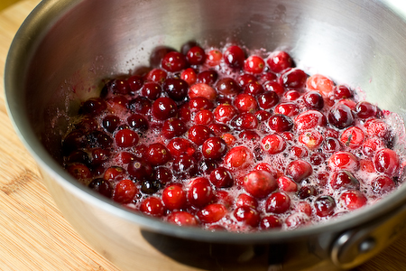

<?xml version="1.0" encoding="UTF-8"?>
<rss version="2.0"
	xmlns:content="http://purl.org/rss/1.0/modules/content/"
	xmlns:wfw="http://wellformedweb.org/CommentAPI/"
	xmlns:dc="http://purl.org/dc/elements/1.1/"
	xmlns:atom="http://www.w3.org/2005/Atom"
	xmlns:sy="http://purl.org/rss/1.0/modules/syndication/"
	xmlns:slash="http://purl.org/rss/1.0/modules/slash/"
	>

<channel>
	<title>VeganYumYum &#187; herbs</title>
	<atom:link href="http://veganyumyum.com/category/herbs/feed/" rel="self" type="application/rss+xml" />
	<link>http://veganyumyum.com</link>
	<description>Yup, I&#039;m back.</description>
	<lastBuildDate>Thu, 08 Nov 2012 23:25:24 +0000</lastBuildDate>
	<language>en-US</language>
	<sy:updatePeriod>hourly</sy:updatePeriod>
	<sy:updateFrequency>1</sy:updateFrequency>
	<generator>http://wordpress.org/?v=3.4.2</generator>
		<item>
		<title>Blackened Tomato Canapés</title>
		<link>http://veganyumyum.com/2012/08/blackened-tomato-canapes/</link>
		<comments>http://veganyumyum.com/2012/08/blackened-tomato-canapes/#comments</comments>
		<pubDate>Wed, 29 Aug 2012 20:26:35 +0000</pubDate>
		<dc:creator>Lolo</dc:creator>
				<category><![CDATA[appetizers]]></category>
		<category><![CDATA[herbs]]></category>
		<category><![CDATA[parties]]></category>
		<category><![CDATA[recipe]]></category>

		<guid isPermaLink="false">http://veganyumyum.com/?p=425</guid>
		<description><![CDATA[Well. Hello! I&#8217;ve missed you. I&#8217;ve spent the last two years working in animal rescue, but it&#8217;s time to dust off the blog and get back in the kitchen. Today I have a super simple but delicious appetizer to share with you. It&#8217;s very nearly September and I am desperately clinging to the last gasps [...]]]></description>
			<content:encoded><![CDATA[<p><a href="http://www.flickr.com/photos/teenytinyturkey/7888977832/"></a></p>
<p>Well.  Hello!  I&#8217;ve missed you.</p>
<p>I&#8217;ve spent the last two years working in animal rescue, but it&#8217;s time to dust off the blog and get back in the kitchen. Today I have a super simple but delicious appetizer to share with you.  It&#8217;s very nearly September and I am desperately clinging to the last gasps of summer.  This might just be my favorite time of year; farmer&#8217;s markets are overflowing and I fall in love with ingredients I&#8217;ve taken for granted all over again.</p>
<p><a href="http://www.flickr.com/photos/teenytinyturkey/7888978904/"></a></p>
<p>Case in point: the tomato. </p>
<p>This recipe was made for the late-summer haul of juicy, sweet, perfect tomatoes. Use tomatoes worthy of a spotlight. If you happen to be growing your own grape tomatoes (and your own basil!) than this has got your name all over it.  It&#8217;s quick to prepare and tastes great at room temperature, so you can make a bunch and let your dinner party guests enjoy them at their leisure.  Perhaps on a deck with a nice bottle of red? I don&#8217;t have a deck, and didn&#8217;t throw a party, so I won&#8217;t tell if you just make these for yourself as a light snack on a weekend afternoon.  They are so easy you can absolutely make them without an occasion.</p>
<p><strong>Blackened Tomato Canapés</strong><br />
<em>Makes about 25 pieces</em></p>
<p>1 Pint Cherry Tomatoes<br />
Around 7 Slices of Sourdough Bread<br />
25 Basil Leaves<br />
1 Cup Balsamic Vinegar (or prepared/purchased balsamic glaze)<br />
Olive Oil<br />
Sea or Kosher Salt<br />
Fresh Cracked Black Pepper</p>
<p>Start off by preparing the crostini. Arrange your oven racks so you have one at the very top and set your oven to Broil.  </p>
<p><a href="http://www.flickr.com/photos/teenytinyturkey/7888980400/"></a></p>
<p>Slice the sourdough into bite-sized triangles.  I like to cut the bottom crust off with a long chef&#8217;s knife (helps you get a nice clean edge) and create one big triangle.  Slice that in half for two triangles, and each of those in half again.  Each piece of bread should give you 4 small triangles.  You can save the scraps to make your own breadcrumbs, or toss them to the birds.</p>
<p><a href="http://www.flickr.com/photos/teenytinyturkey/7888980222/"></a></p>
<p>Arrange the bread on a baking sheet and brush lightly on one side with olive oil.</p>
<p><a href="http://www.flickr.com/photos/teenytinyturkey/7888979950/"> </a></p>
<p>Season generously with sea salt and fresh cracked black pepper.  I like to go a little crazy with the black pepper, but if you don&#8217;t like its signature heat, you can ease up on it.  </p>
<p><a href="http://www.flickr.com/photos/teenytinyturkey/7888979650/"> </a></p>
<p>Broil for 2-4 minutes (watching constantly) until perfectly golden.  Remove from oven and set aside.  Do not walk away from these while they are in the oven or they will burn up!</p>
<p><a href="http://www.flickr.com/photos/teenytinyturkey/7888979398/" ></a></p>
<p>Now grab your cast-iron skillet and put it over high heat, very lightly oiled.  You can make the tomatoes in a regular pan if you don&#8217;t have cast-iron, but a cast-iron pan is perfect for this application.  Once the pan starts to smoke, add the tomatoes.  Every 10 seconds or so, gently shake the pan to toss the tomatoes around.  We are looking to char the skin a little while only lightly cooking the tomatoes.</p>
<p>Meanwhile, if you need to make your own balsamic glaze, add 1 cup of balsamic vinegar to a small sauce pot and bring to a boil.  Reduce about 75%, until it becomes a thick glaze, being careful not to burn.  Set aside when done.  This takes about 10 minutes or less.</p>
<p><a href="http://www.flickr.com/photos/teenytinyturkey/7888979156/"></a></p>
<p>The tomatoes are done when the skin is speckled with black char and begins to split.  You are not making tomato sauce, so don&#8217;t overcook them until they are mushy.  We want quick cooking over very high heat (about 5 minutes total) to add flavor but to keep the individual tomatoes whole.  </p>
<p><a href="http://www.flickr.com/photos/teenytinyturkey/7888978692/"></a></p>
<p>Once all your ingredients are ready, begin assembly by placing a single basil leaf on each piece of crostini.  I like to flip the leaf inside out to create a little boat for the tomato to sit in.</p>
<p><a href="http://www.flickr.com/photos/teenytinyturkey/7888978358/"></a></p>
<p>Top each piece with a single tomato and drizzle the balsamic glaze over the top.  If you did not salt the bread enough before baking, you may wish to add a little pinch of salt over the top, but taste it first to be sure!</p>
<p>That&#8217;s it!  If you happen to have leftover tomatoes, they would be a wonderful addition to just about any recipe.  I think they would be killer in pasta or chopped up as a salsa base.</p>
<p><a href="http://www.flickr.com/photos/teenytinyturkey/7888978076/"> </a></p>
]]></content:encoded>
			<wfw:commentRss>http://veganyumyum.com/2012/08/blackened-tomato-canapes/feed/</wfw:commentRss>
		<slash:comments>115</slash:comments>
		</item>
		<item>
		<title>Broccolini, Cherry Tomato, and Butter Bean Udon</title>
		<link>http://veganyumyum.com/2009/03/broccolini-cherry-tomato-and-butter-bean-udon/</link>
		<comments>http://veganyumyum.com/2009/03/broccolini-cherry-tomato-and-butter-bean-udon/#comments</comments>
		<pubDate>Sun, 29 Mar 2009 20:40:35 +0000</pubDate>
		<dc:creator>Lolo</dc:creator>
				<category><![CDATA[dinner]]></category>
		<category><![CDATA[herbs]]></category>
		<category><![CDATA[pasta]]></category>
		<category><![CDATA[recipe]]></category>
		<category><![CDATA[video]]></category>

		<guid isPermaLink="false">http://veganyumyum.com/?p=353</guid>
		<description><![CDATA[I asked my twitter friends if they&#8217;d like to see recipes made for one, and the response was overwhelming; absolutely. A lot of you seem to make lunch for yourself, or have several weeknights where you&#8217;re cooking solo and want to throw something fresh together without a lot of hassel. When I know I&#8217;m going [...]]]></description>
			<content:encoded><![CDATA[<p><a href="http://www.flickr.com/photos/teenytinyturkey/3393934026/" title="Broccolini, Cherry Tomato, and Butterbean Udon by teenytinyturkey, on Flickr"></a></p>
<p>I asked my <a href="http://twitter.com/littleturkey">twitter</a> friends if they&#8217;d like to see recipes made for one, and the response was overwhelming; absolutely.  A lot of you seem to make lunch for yourself, or have several weeknights where you&#8217;re cooking solo and want to throw something fresh together without a lot of hassel.  </p>
<p>When I know I&#8217;m going to be eating alone, I rarely do the logical thing and make a big batch of something so I can have leftovers.  I&#8217;m <em>terrible</em> with leftovers.  I&#8217;m too fickle when it comes to food, so leftovers turn to science projects in the fridge.  Therefore I tend to make a lot of one-off meals based on whatever odds and ends of produce I have left.  </p>
<p>So here&#8217;s one of them.  I had one serving broccolini, and half a pint of cherry tomatoes.  Not enough of either to feed both me and my husband, so I made one little but delicious meal out of it.  If you&#8217;re not cooking for one, this dish is easy to scale up, so don&#8217;t worry.  But my friends who dine independently?  This one is especially for you!</p>
<p>Annnd, how about a video?  Here&#8217;s the whole meal, start to finish, in two minutes.  A little overview, if you will.  There&#8217;s nothing difficult about this recipe, so this is more for fun than anything.  You can watch the whole video in HD, full-screen, even!</p>
<p><object width="450" height="253"><param name="allowfullscreen" value="true" /><param name="allowscriptaccess" value="always" /><param name="movie" value="http://vimeo.com/moogaloop.swf?clip_id=3900747&amp;server=vimeo.com&amp;show_title=1&amp;show_byline=1&amp;show_portrait=0&amp;color=00ADEF&amp;fullscreen=1" /><embed src="http://vimeo.com/moogaloop.swf?clip_id=3900747&server=vimeo.com&show_title=1&show_byline=1&show_portrait=0&color=00ADEF&fullscreen=1" type="application/x-shockwave-flash" allowfullscreen="true" allowscriptaccess="always" width="450" height="253"></embed></object><br /><a href="http://vimeo.com/3900747">Watch this video on Vimeo instead</a>.</p>
<p><strong>Broccolini, Cherry Tomato and Butter Bean Udon</strong><br />
<em>Serves One</em></p>
<p>1 to 1 1/2 Bundles Udon Noodles<br />
Oil, about 2-3 Tbs<br />
3-6 Stalks of Broccolini, depending on size<br />
1/2 tsp Red Pepepr Flakes<br />
Black Pepper<br />
Salt<br />
10 Cherry Tomatoes, quartered<br />
1/2 Cup Butter Beans/Lima Beans, drained and rinsed<br />
1-2 tsp Italian Herbs<br />
Balsamic Vinegar, for drizzling</p>
<p>Heat a large pot of salted water to a boil.  Add udon noodles and cook for four minutes (or as long as package directions dictate), then drain and rinse well.  Coat lightly with oil to prevent noodles from sticking.  I use spray oil for this, I think it&#8217;s the easiest and you use the least amount of oil.  Set noodles aside.</p>
<p>Heat a large cast-iron skillet over medium high with a little oil.  Add broccolini and coat with oil.  Season with 1 big pinch of salt, black pepper, and red pepper flakes.  Once the broccolini starts to turn bright green and get a little color (just a minute or two), push them to the edge of the pan.  </p>
<p>Turn heat up a little and add quartered cherry tomatoes. Stir to coat in any oil/spices leftover from the broccolini, then let cook, untouched, to get a little color and soften up, 1-2 minutes.  Once tomatoes are softened, add 1/2 cup of butter beans.  Stir everything together and remove to a bowl.</p>
<p>In the still-hot pan, add a 1-2 Tbs more oil.  Add cooked udon noodles to the hot pan, seasoning with a pinch of salt and italian herbs. Toss to coat the pasta.  Once the pasta is coated and is heated through, add back the broccolini, beans, and tomatoes.  Taste and season with more salt or pepper if needed.</p>
<p>Plate, and drizzle with balsamic vinegar if desired.</p>
<p><strong>Tweet Tweet!</strong></p>
<p>Feel free to <a href="http://twitter.com/littleturkey">follow me</a> on twitter! Besides random daily updates, I tweet about upcoming blog posts, show sneak-peek photos of new recipes, and let you know the moment my blog has been updated.  I do try to limit cat-related tweets, but I&#8217;m only human.  And it <em>is</em> twitter, afterall.  Say hello and I&#8217;ll say hi back!</p>
<p><a href="http://www.flickr.com/photos/teenytinyturkey/3393934102/" title="Broccolini, Cherry Tomato, and Butterbean Udon by teenytinyturkey, on Flickr"></a></p>
]]></content:encoded>
			<wfw:commentRss>http://veganyumyum.com/2009/03/broccolini-cherry-tomato-and-butter-bean-udon/feed/</wfw:commentRss>
		<slash:comments>53</slash:comments>
		</item>
		<item>
		<title>Crash Hot Potatoes</title>
		<link>http://veganyumyum.com/2009/01/crash-hot-potatoes/</link>
		<comments>http://veganyumyum.com/2009/01/crash-hot-potatoes/#comments</comments>
		<pubDate>Wed, 28 Jan 2009 20:08:18 +0000</pubDate>
		<dc:creator>Lolo</dc:creator>
				<category><![CDATA[dinner]]></category>
		<category><![CDATA[herbs]]></category>
		<category><![CDATA[recipe]]></category>

		<guid isPermaLink="false">http://veganyumyum.com/?p=335</guid>
		<description><![CDATA[I love no-recipe recipes. This isn&#8217;t my recipe, but when I saw it on The Pioneer Woman, I knew I not only had to make it (over and over), but also share it with you guys. It is EASY and it is TASTY. Boil potatoes, smash them, cover them with olive oil, salt, and rosemary, [...]]]></description>
			<content:encoded><![CDATA[<p><a href="http://www.flickr.com/photos/teenytinyturkey/3234879182/" title="Crash Hot Potatoes by teenytinyturkey, on Flickr"></a></p>
<p>I love no-recipe recipes.  This isn&#8217;t my recipe, but when I saw it on <a href="http://thepioneerwoman.com/cooking/2008/06/crash-hot-potatoes/">The Pioneer Woman</a>, I knew I not only had to make it (over and over), but also share it with you guys.</p>
<p>It is EASY and it is TASTY.</p>
<p>Boil potatoes, smash them, cover them with olive oil, salt, and rosemary, and bake them until they&#8217;re crispy.  There.  Now you know how to make them.</p>
<p>The Pioneer Woman uses New Potatoes, and I think those are a good choice.  They&#8217;re small and waxy, which means when you squish them they don&#8217;t explode into a fluffy mess.</p>
<p>I, however, used regular organic russets, but small ones.  These also worked just fine, but I did get a bit of fluffy mess.  No worries, if this happens to you, just scoop the potatoes into rough piles and proceed. </p>
<p>In November I bought a pressure cooker, and I adore it.  Especially for making potatoes.  It&#8217;s not that boiling potatoes is hard, but pressure cooking them is definitely easier.  They come out nice and fluffy and delicious, and they cook quickly and evenly.  No soggy potatoes from over boiling, no splashing and scalding, just well-cooked potatoes every time.</p>
<p>Also, keep in mind that this recipe does require a good deal of oil and salt to be tasty.  Obviously fat and salt make lots of things tasty, but when you&#8217;re dressing up naked potatoes, they&#8217;re really required.  You can add more salt at the table if needed, but do your tastebuds a favor and close your eyes when you&#8217;re putting the oil on before baking. </p>
<p><strong>Crash Hot Potatoes</strong><br />
<i>Makes as many as you please</i></p>
<p>Several Smallish Potatoes, red or russet<br />
Salt<br />
Pepper<br />
Olive Oil<br />
2-3 Sprigs Rosemary</p>
<p>Preheat oven to 450º F.</p>
<p>Scrub the potatoes clean.  Boil them until tender all the way through.  If you have a pressure cooker, cook the potatoes whole on a trivet with 1 cup of water for 10-20 minutes at high-pressure, depending on the size of your potatoes.  Turn off the heat and let the cooker release pressure naturally.</p>
<p><a href="http://www.flickr.com/photos/teenytinyturkey/3234027621/" title="Potatoes in pressure cooker by teenytinyturkey, on Flickr"></a></p>
<p>Place the cooked potatoes on a baking sheet drizzled with olive oil.  I like to use parchment paper here to keep things clean and non-stick.</p>
<p><a href="http://www.flickr.com/photos/teenytinyturkey/3234878844/" title="Pressure cooked potatoes by teenytinyturkey, on Flickr"></a></p>
<p>Make an X cut on the top of each potato for easier squishing.  Use a potato masher and gently press on each potato until squished but not obliterated.  You want them to stay together somewhat.  If they fall apart, have no fear!  Just scoop the bits into piles and proceed.</p>
<p>Once smashed, generously sprinkle salt over each potato.  Follow with pepper, and douse everything with more olive oil.  If desired, sprinkle each potato with freshly chopped rosemary.</p>
<p><a href="http://www.flickr.com/photos/teenytinyturkey/3234027777/" title="Crash Hot Potatoes, before baking by teenytinyturkey, on Flickr"></a></p>
<p>Bake the potatoes at 450º F for 20-25 minutes, longer is better as long as they&#8217;re not burning.  Serve hot!  I sprinkled smoked paprika over them to finish, but I put that on everything.  </p>
<p>Thanks, Pioneer Woman, for the awesome recipe!</p>
<p><a href="http://www.flickr.com/photos/teenytinyturkey/3234879006/" title="Crash Hot Potatoes by teenytinyturkey, on Flickr"></a></p>
]]></content:encoded>
			<wfw:commentRss>http://veganyumyum.com/2009/01/crash-hot-potatoes/feed/</wfw:commentRss>
		<slash:comments>130</slash:comments>
		</item>
		<item>
		<title>A YumYum Thanksgiving</title>
		<link>http://veganyumyum.com/2008/11/a-yumyum-thanksgiving/</link>
		<comments>http://veganyumyum.com/2008/11/a-yumyum-thanksgiving/#comments</comments>
		<pubDate>Tue, 25 Nov 2008 02:00:42 +0000</pubDate>
		<dc:creator>Lolo</dc:creator>
				<category><![CDATA[dinner]]></category>
		<category><![CDATA[fake meat]]></category>
		<category><![CDATA[herbs]]></category>
		<category><![CDATA[parties]]></category>
		<category><![CDATA[salad]]></category>
		<category><![CDATA[sauce/dressing]]></category>

		<guid isPermaLink="false">http://veganyumyum.com/?p=307</guid>
		<description><![CDATA[Like a lot of people, I usually travel for Thanksgiving instead of hosting myself. This year, however, I&#8217;m able to create a full Thanksgiving dinner. I decided to do it a few days early in case any of you are still looking for some ideas for your own holiday meals. I was really inspired by [...]]]></description>
			<content:encoded><![CDATA[<p><a title="A YumYum Thanksgivng by teenytinyturkey, on Flickr" href="http://www.flickr.com/photos/teenytinyturkey/3056529729/"></a></p>
<p>Like a lot of people, I usually travel for Thanksgiving instead of hosting myself.  This year, however, I&#8217;m able to create a full Thanksgiving dinner.  I decided to do it a few days early in case any of you are still looking for some ideas for your own holiday meals.</p>
<p>I was really inspired by <a href="http://veganmenu.blogspot.com/2008/03/seitan-roulade-braised-leeks.html">Vegan Menu&#8217;s Seitan Roulade</a> and decided to take my own stab at it.  It seemed like the perfect centerpiece.  My recipe is very different than his, but if you&#8217;re looking for another filling idea, definitely check out his post!</p>
<p>The seitan in this recipe is easily made from vital wheat gluten.  It&#8217;s wraped around a delicious, homemade herbed chestnut stuffing and then baked.  I served it with fresh tangerine cranberry sauce, broiled green beans with slow roasted tomatoes, and fluffy mashed potatoes.  Not pictured is a lovely mushroom gravy made with fresh vegetable broth.</p>
<p>You did all make your own <a href="../../../2008/10/homemade-vegetable-broth/index.html">vegetable broth</a>, right?</p>
<p>The majority of this meal can be prepared in advance, so if you have the day before Thanksgiving to start cooking, your meal will be well under control by the time you wake up on Thanksgiving morning.  Less time in the kitchen means more time celebrating with your loved ones!  I&#8217;ve included a game-plan at the end of this post so you have an idea of exactly what you can do in advance.</p>
<p>To save even more time, stop by Trader Joes and pick up a box of their already prepared steamed and shelled chestnuts, packed in an airtight bag&#8211;not canned!  This will save a ton of prep work and roasting time.  I haven&#8217;t seen these available in any other store, but if you have any tips, do let me know in the comments.  Prepping them from scratch works, too.</p>
<p>Alright, there are a lot of recipes to get to, so let&#8217;s get started!</p>
<p><span style="color: #ff0000;">Edit Dec. 2008: The seitan part of the roulade apparently sucks! It worked fine for me, but lots of readers are having trouble with it.  Until I revise the recipe, beware! Make it at your own risk! :)</span></p>
<p><strong>A YumYum Thanksgiving</strong><br />
<em>Serves 8</em></p>
<p><strong>Seitan Roulade with Chestnut Stuffing</strong></p>
<p><em>Seitan</em><br />
2 Cups Vital Wheat Gluten, (1 box of Arrowhead Mills brand)<br />
1/4 Cup Nutritional Yeast<br />
1/2 tsp Salt<br />
2 1/3 Cups Warm Vegetable Broth</p>
<p>Mix gluten, yeast, and salt in a large bowl until well combined.  Add the vegetable stock and gently mix with your hands until all of the dry mixture is moistened.  You should have a soft, squishy, wet dough.  Knead a few times, and agitate the dough by squeezing and pressing it.</p>
<p>Dump the dough out onto a large cutting board and use your fingers to press it out to a 12&#215;18&#8243; rectangle.  If the dough is too springy, let rest for 15 minutes before rolling it out.  Cut the dough into quarters:</p>
<p><a title="Seitan by teenytinyturkey, on Flickr" href="http://www.flickr.com/photos/teenytinyturkey/3056510347/"></a></p>
<p>Heat a large, <em>non-stick</em> skillet over high heat with some olive oil.  Briefly pan-fry the seitan pieces until just barely golden brown on both sides.  This gives color, flavor, and kick-starts the cooking process so your pieces will be easier to handle.</p>
<p><a title="Pan Fried Seitan by teenytinyturkey, on Flickr" href="http://www.flickr.com/photos/teenytinyturkey/3057348828/"></a></p>
<p>Set aside until you&#8217;re ready to roll up the roulades.  Make the stuffing.</p>
<p><strong>Chestnut Stuffing</strong></p>
<p>2 Tbs Olive Oil<br />
2-3 Shallots,  chopped finely<br />
10 Cremini Mushrooms, chopped (1 cup after chopping)<br />
2 Ribs Celery, chopped<br />
1 Box Trader Joes Prepared Chestnuts (about 1 1/4 cups, chopped)<br />
7 Fresh Sage Leaves, chopped<br />
2 Thyme Sprigs, leaves only<br />
1 Tbs Fresh Chopped Marjoram<br />
5 Cups Cubed Bread, (for homemade, see note)<br />
1/2 to 1 Cup Warm Vegetable Broth<br />
Salt<br />
Pepper</p>
<p>Note: If making your own bread, take 1/2 of a 1 pound loaf of sourdough and slice into cubes.  I leave the crust on! Spread out the bread on a baking sheet and bake at 300º F for 30 minutes, tossing half-way through.</p>
<p>In a large, deep skillet, heat oil and saute shallots until beginning to color.  Add mushrooms and carrots and cook until softened.  Add herbs and chestnuts.  Add bread and toss.  Add broth 1/2 cup at a time until stuffing is softened but not overly soggy.  Season with salt and pepper.  If not using for roulades, place stuffing in an oiled casserole dish and bake at 350º for 20-30 minutes, or until golden brown on top.  If using for roulades, set aside to cool.</p>
<p>Place stuffing on top of a piece of seitan, covering the whole surface.  Roll up the seitan, stretching it to make as tight a roll as possible.  Let the roll rest on the seam.</p>
<p><a title="Rolling the roulade by teenytinyturkey, on Flickr" href="http://www.flickr.com/photos/teenytinyturkey/3056512913/"></a></p>
<p>With kitchen twine or any cotton string you have, tie up the roulade so that it doesn&#8217;t unroll:</p>
<p><a title="Tying the Roulade, method #2 by teenytinyturkey, on Flickr" href="http://www.flickr.com/photos/teenytinyturkey/3057353806/"></a></p>
<p>Repeat for the three other sheets of seitan.  Place the tied roulades on a baking sheet covered in parchment paper.  Lightly brush with olive oil.  Bake at 350º for 30-40 minutes, turning half-way through, until golden brown.</p>
<p><a title="Seitan Roulade with Chestnut Stuffing by teenytinyturkey, on Flickr" href="http://www.flickr.com/photos/teenytinyturkey/3056521131/"></a></p>
<p>Let rest 5-10 minutes before slicing.  Remove strings before serving!</p>
<p><a title="Seitan Roulade with Chestnut Stuffing by teenytinyturkey, on Flickr" href="http://www.flickr.com/photos/teenytinyturkey/3056522725/"></a></p>
<p><strong>Broiled Haricots Verts with Slow Roasted Tomatoes</strong></p>
<p><a title="Broiled Green Beans with Slow-Roasted Tomatoes by teenytinyturkey, on Flickr" href="http://www.flickr.com/photos/teenytinyturkey/3057361528/"></a></p>
<p><em>Slow Roasted Tomatoes </em><br />
2-3 Pints Grape Tomatoes<br />
Oil<br />
Salt<br />
Pepper</p>
<p>Preheat oven to 350º F.  Coat tomatoes in olive oil and season with salt and pepper.  Place on a baking sheet covered with aluminum foil.  Bake for 40-60 minutes until very soft and beginning to color.  Can be made a day in advance.</p>
<p><em>Broiled Green Beans</em><br />
16 oz Haricots Verts (or regular green beans)<br />
Salt<br />
Pepper<br />
Olive oil<br />
1 Pinch Sugar</p>
<p>Coat green beans in oil, and season with salt, pepper, and sugar.  Place them on a baking sheet covered in foil.</p>
<p><a title="Green Beans by teenytinyturkey, on Flickr" href="http://www.flickr.com/photos/teenytinyturkey/3056519615/"></a></p>
<p>Broil beans (just a few inches from the heating element of your oven) for 4-6 minutes or until softened and slightly browned.  Toss with warm slow-roasted tomatoes and serve.</p>
<p><strong>Mushroom Gravy</strong></p>
<p>2 Tbs Olive Oil<br />
1 Cup Chopped Cremini Mushrooms (measured after chopping)<br />
1 Pinch Salt<br />
2 Fresh Sage Leaves, chopped<br />
1 Stem Fresh Thyme, leaves only<br />
1 tsp White Wine Vinegar<br />
Black Pepper<br />
3 Tbs Earth Balance Margarine<br />
3 Tbs Flour<br />
1 Cup Vegetable Broth<br />
Soymilk, for thinning</p>
<p>Heat oil in a large skillet and add mushrooms, salt, and herbs.  Cook for 4-5 minutes until softened and add vinegar.  Stir well.  Add a few grinds fresh black pepper and remove mushrooms from pan.  Don&#8217;t clean out the pan!  Turn the head down to low.  Add margarine and flour and whisk until a paste (or roux) forms.  Slowly add vegetable broth, whisking all the time, until mixture is smooth.  Turn the heat back up and whisk until the mixture thickens into a gravy.  Add soymilk in small splashes if gravy becomes too thick.  Season with salt and more pepper to taste.</p>
<p><strong>Tangerine Cranberry Sauce</strong></p>
<p>1 16 oz Bag Fresh or Frozen Cranberries<br />
1 Cup Water<br />
1 Cup Sugar<br />
Juice from 1 Tangerine (about 1/3 cup)<br />
Zest from 1 Tangerine</p>
<p>Heat all the above ingredients over medium high heat in a sauce pan.  Stir occasionally.</p>
<p></p>
<p>The cranberries will pop, and after 10-15 minutes of cooking the sauce will thicken and no longer be watery.  Refrigerate and serve when needed.  Garnish with fresh slices of tangerine if desired.</p>
<p><a title="A YumYum Thanksgivng by teenytinyturkey, on Flickr" href="http://www.flickr.com/photos/teenytinyturkey/3056528851/"></a></p>
<p>I also served fluffy mashed potatoes, but I figured you probably don&#8217;t need a recipe for that.  However, I can say that making mashed potatoes in a pressure cooker is my favorite way to prepare them.  Since the potatoes are not submersed in water, they are extra light and fluffy.  And they cook so fast, too!  If you have a pressure cooker, dig it out to make your potatoes this year.  You won&#8217;t be sorry.</p>
<p>Here&#8217;s how you can save time by preparing parts of this meal ahead of time:</p>
<p><strong>Anytime before:</strong><br />
-Make vegetable stock, refrigerate for 1 week or freeze</p>
<p><strong>One or Two Days Before:</strong><br />
-Make bread cubes for stuffing<br />
-Make seitan, roll it out, pan fry it<br />
-Make the stuffing<br />
-Roll up the roulades, cover in plastic wrap, refrigerate<br />
-Make the cranberry sauce<br />
-Slow roast the tomatoes</p>
<p><strong>The Day Of:</strong><br />
-Bake the roulades (40 Minutes)<br />
-Broil the green beans (4-6 minutes)<br />
-Make the gravy (10-15 minutes)<br />
-Make the mashed potatoes (15-20 Minutes)</p>
<p>So yeah!  That&#8217;s what I&#8217;m having for Thanksgiving this year.  What are <em>you</em> having?</p>
<p><a title="Seitan Roulade with Chestnut Stuffing by teenytinyturkey, on Flickr" href="http://www.flickr.com/photos/teenytinyturkey/3056525557/"></a></p>
]]></content:encoded>
			<wfw:commentRss>http://veganyumyum.com/2008/11/a-yumyum-thanksgiving/feed/</wfw:commentRss>
		<slash:comments>113</slash:comments>
		</item>
		<item>
		<title>Asparagus and White Bean Pesto Tart</title>
		<link>http://veganyumyum.com/2008/09/asparagus-and-white-bean-pesto-tart/</link>
		<comments>http://veganyumyum.com/2008/09/asparagus-and-white-bean-pesto-tart/#comments</comments>
		<pubDate>Mon, 29 Sep 2008 20:34:34 +0000</pubDate>
		<dc:creator>Lolo</dc:creator>
				<category><![CDATA[appetizers]]></category>
		<category><![CDATA[baked goods]]></category>
		<category><![CDATA[herbs]]></category>
		<category><![CDATA[parties]]></category>
		<category><![CDATA[recipe]]></category>

		<guid isPermaLink="false">http://veganyumyum.com/2008/09/asparagus-and-white-bean-pesto-tart/</guid>
		<description><![CDATA[I can&#8217;t believe it, but the holidays are coming. And when there are holidays, there are parties, and the ever growing need for easy, tasty, fancy seeming food that you can serve your guests. Here&#8217;s a beautiful, ridiculously delicious, and easy-to-make asparagus tart that is so freakin&#8217; awesome you&#8217;ll want to make it even when [...]]]></description>
			<content:encoded><![CDATA[<p><a href="http://www.flickr.com/photos/teenytinyturkey/2898872385/" title="Asparagus and White Bean Pesto Tart by teenytinyturkey, on Flickr"></a></p>
<p>I can&#8217;t believe it, but the holidays are coming.  And when there are holidays, there are parties, and the ever growing need for easy, tasty, fancy <em>seeming</em> food that you can serve your guests.  Here&#8217;s a beautiful, ridiculously delicious, and easy-to-make asparagus tart that is so freakin&#8217; awesome you&#8217;ll want to make it even when you&#8217;re not expecting guests.</p>
<p>Now, there are a few trade-offs that make this recipe as easy as it is.  The first Pepperidge Farm puff pastry, because it&#8217;s a pain the butt to make it from scratch.  This stuff is miraculously vegan.  The trade-off is that while it might be vegan, the ingredients list is pretty long and contains things like high fructose corn syrup and hydrogenated oil.  This doesn&#8217;t bother me much, especially since I don&#8217;t eat things like this a lot.  But I know some of my readers <em>are</em> uncomfortable eating products containing these ingredients at all.  For those who aren&#8217;t, or don&#8217;t mind occasionally consuming something like this, head to the freezer section of your grocery store and pick up the Pepperidge Farm puff pastry sheets.  They&#8217;re easy to use and only require 40 minutes of defrosting before using.</p>
<p><a href="http://www.flickr.com/photos/teenytinyturkey/2898866181/" title="Asparagus and White Bean Pesto Tart by teenytinyturkey, on Flickr"></a></p>
<p>If you&#8217;re interested in making your own vegan puff pastry, there is hope! <a href="http://vegandad.blogspot.com/2008/07/raspberry-mango-ginger-turnovers.html"> VeganDad made some beautiful vegan puff pastry</a> simply subbing Earth Balance margarine for butter and following <a href="http://www.foodbeam.com/2008/04/10/reussir-la-pate-feuilletee-pas-a-pas-mastering-puff-pastry-step-by-step/">FoodBeam&#8217;s thoughtful recipe</a>.  Definitely check out both blogs.  One day I&#8217;m sure I&#8217;ll try to make my own puff pastry, but that day is not today.  Props to <a href="http://vegandad.blogspot.com/">VeganDad</a> for giving me hope that it&#8217;s even possible!  You, sir, are a gentleman and a scholar.</p>
<p>The other time-saving tips include using canned beans (which I always do anyway, because I&#8217;m lazy?) and a pesto concentrate that you can find at Whole Foods (and many other grocery stores) in the pasta/tomato aisle.  It&#8217;s called <a href="http://www.thekitchenstore.com/ampepa.html">Amore Pesto Paste</a>, and the only ingredients are basil, sunflower oil, olive oil, salt, pine nuts, garlic, and citric acid.  It&#8217;s wonderful to use in all sorts of stuff, so pick up a tube and try it out.</p>
<p><strong>Asparagus Tart with White Bean Pesto</strong><br />
<em>Serves 8 as an appetizer</em></p>
<p>1 15 oz Can Navy Beans<br />
1/2 tsp Salt<br />
1/4 Heaping Cup Raw Cashews<br />
1 tsp Dijon Mustard<br />
1 Tbs Amore Pesto Paste<br />
2 tsp Fresh Lemon Juice<br />
2 Tbs Soy or Rice Milk, or water</p>
<p>1 lb Fresh Asparagus<br />
1 Puff Pastry Sheet<br />
Salt, Pepper, Olive Oil</p>
<p>Remove 1 puff pastry sheet from the freezer and let it defrost on the counter for 40 minutes on top of parchment paper.  Meanwhile, preheat the oven to 400º F and make the filling.</p>
<p>Drain and rinse the beans, and add them to the work bowl of a food processor.  Add of the remaining ingredients except the soymilk (salt through lemon juice). Pulse the food processor, stopping ever few pulses to scrape down the sides and pulse again.  You want to break up the beans and the cashews.  Once it&#8217;s as smooth as you can get it, dribble in the soymilk while the machine is running, as this should help further smooth the mixture.</p>
<p>After 40 minutes of defrosting, carefully unwrap the puff pastry on top of your parchment paper:</p>
<p><a href="http://www.flickr.com/photos/teenytinyturkey/2898858093/" title="Raw puff pastry by teenytinyturkey, on Flickr"></a></p>
<p>Roll the puff pastry out slightly into a rectangle.  Then add the white bean pesto mixture, leaving a 1 to 1 1/2 inch border on all sides:</p>
<p><a href="http://www.flickr.com/photos/teenytinyturkey/2898858571/" title="White Bean Pesto by teenytinyturkey, on Flickr"></a></p>
<p>Trim your asparagus so that it fits the tart width-wise.  Press the spears into the white bean pesto, alternating their direction so that there are tips and bases next to each other; this one everyone is guaranteed every part of the asparagus after cutting:</p>
<p><a href="http://www.flickr.com/photos/teenytinyturkey/2899702814/" title="Placing the asparagus by teenytinyturkey, on Flickr"></a></p>
<p>With a sharp knife, trim all the edges to they are neat and square.  Trim away as little as possible.</p>
<p><a href="http://www.flickr.com/photos/teenytinyturkey/2898860115/" title="Trimming the edges by teenytinyturkey, on Flickr"></a></p>
<p>Brush the spears with olive oil and sprinkle lightly with salt and pepper:</p>
<p><a href="http://www.flickr.com/photos/teenytinyturkey/2899705328/" title="Ready to Bake by teenytinyturkey, on Flickr"></a></p>
<p>Using the parchment paper, slide the tart onto a baking sheet (don&#8217;t remove the tart from the paper).  Bake at 400ºF for 25-30 minutes until the tart is puffed and golden brown and the spears are tender.  Serve while just warm.</p>
<p><a href="http://www.flickr.com/photos/teenytinyturkey/2899707580/" title="Asparagus and White Bean Pesto Tart by teenytinyturkey, on Flickr"></a></p>
<p>You can reheat this tart in the oven for a few minutes if you have leftovers, but it&#8217;s also good at room temperature.  Fresh basil is a nice garnish.  If you&#8217;ve never worked with puff pastry before, this is a great recipe to get your feet wet.  It really is easy to use, just as delicious as phyllo dough with none of the stress.  And it&#8217;s fun to watch it puff!</p>
<p><a href="http://www.flickr.com/photos/teenytinyturkey/2899714106/" title="Asparagus and White Bean Pesto Tart by teenytinyturkey, on Flickr"></a></p>
]]></content:encoded>
			<wfw:commentRss>http://veganyumyum.com/2008/09/asparagus-and-white-bean-pesto-tart/feed/</wfw:commentRss>
		<slash:comments>78</slash:comments>
		</item>
		<item>
		<title>Super Quick Tomato Basil Cream Pasta</title>
		<link>http://veganyumyum.com/2008/08/super-quick-tomato-basil-cream-pasta/</link>
		<comments>http://veganyumyum.com/2008/08/super-quick-tomato-basil-cream-pasta/#comments</comments>
		<pubDate>Tue, 12 Aug 2008 18:10:09 +0000</pubDate>
		<dc:creator>Lolo</dc:creator>
				<category><![CDATA[dinner]]></category>
		<category><![CDATA[herbs]]></category>
		<category><![CDATA[pasta]]></category>
		<category><![CDATA[recipe]]></category>
		<category><![CDATA[sauce/dressing]]></category>

		<guid isPermaLink="false">http://veganyumyum.com/2008/08/super-quick-tomato-basil-cream-pasta/</guid>
		<description><![CDATA[When it&#8217;s summer, I can&#8217;t get enough of recipes that use up fresh tomatoes and basil.  But no matter what time of year, I&#8217;m always down with quick recipes.  You can make this sauce in the time it takes to boil the pasta.  My whole wheat pasta cooks in 9 minutes, so this simple sauce [...]]]></description>
			<content:encoded><![CDATA[<p><a href="http://www.flickr.com/photos/teenytinyturkey/2756695317/" title="Tomtao Basil Cream Pasta with Course Cracked Pepper by teenytinyturkey, on Flickr"></a></p>
<p>When it&#8217;s summer, I can&#8217;t get enough of recipes that use up fresh tomatoes and basil.  But no matter what time of year, I&#8217;m always down with quick recipes.  You can make this sauce in the time it takes to boil the pasta.  My whole wheat pasta cooks in 9 minutes, so this simple sauce makes a 9 minute summer meal that&#8217;s hard to beat.</p>
<p>I wanted to make a dish similar to <a href="../../../2007/08/cappellini-in-fresh-tomato-cream-sauce/index.html">this one</a>, but not using tofutti cream cheese.  I decided to replace it with cashews.  Cashews are the base of most of my favorite vegan cream sauces because they&#8217;re very rich tasting and blend easily, allowing you to create a velvety smooth sauce in your blender.</p>
<p><a href="http://www.flickr.com/photos/teenytinyturkey/2757527788/" title="Tomtao Basil Cream Pasta with Coarse Cracked Pepper by teenytinyturkey, on Flickr"></a></p>
<p><strong>Super Quick Tomato Basil Cream Pasta</strong><br />
<em>Serves Two</em></p>
<p>1 Large, ripe tomato (2 cups roughly chopped, 1 1/2 cups blended)<br />
1/2 Cup Raw Cashews<br />
1 Tbs Tomato Paste<br />
1/4 Cup Water</p>
<p>2 Tbs Olive Oil<br />
2-4 Cloves Garlic, minced, optional<br />
6 Ounces (ish) Whole Wheat Spaghetti<br />
1 tsp Salt (edit: upped from 3/4!)<br />
2-3 Tbs Wine or Water, optional<br />
1-2 tsp Freshly Cracked, Coarse Black Pepper<br />
1 Large Handful Fresh Basil Leaves, chopped</p>
<p>Put a large pot of salted water on to boil.</p>
<p>Core the tomato, then roughly chop it.  Add it to your blender, seeds, skin and all.  Add cashews, tomato paste, and water.  Blend until very smooth.</p>
<p>Add olive oil to a large saute pan over medium-high heat.  Add garlic and saute until golden, being careful not to burn.  Once water is boiling, add pasta.  Pour sauce from the blender into the saute pan and bring to a simmer.  Add salt and let cook for 4-5 minutes, stirring occasionally.</p>
<p>If desired add wine/water to thin out the sauce.  Taste and season more if necessary.  Let simmer until pasta is finished cooking.  Once pasta is cooked, drain.  Add pasta to the saute pan with black pepper and freshly chopped basil leaves.  Toss to coat.  Serve immediately, garnishing with more pepper and basil.</p>
<p>Enjoy!  And stay tuned this week for a big, happy announcement.</p>
<p><a href="http://www.flickr.com/photos/teenytinyturkey/2757528422/" title="Tomtao Basil Cream Pasta with Coarse Cracked Pepper by teenytinyturkey, on Flickr"></a></p>
]]></content:encoded>
			<wfw:commentRss>http://veganyumyum.com/2008/08/super-quick-tomato-basil-cream-pasta/feed/</wfw:commentRss>
		<slash:comments>187</slash:comments>
		</item>
		<item>
		<title>Miniature Napoleons with Eggplant Creme</title>
		<link>http://veganyumyum.com/2008/07/miniature-napoleons-with-eggplant-creme/</link>
		<comments>http://veganyumyum.com/2008/07/miniature-napoleons-with-eggplant-creme/#comments</comments>
		<pubDate>Thu, 17 Jul 2008 22:00:02 +0000</pubDate>
		<dc:creator>Lolo</dc:creator>
				<category><![CDATA[appetizers]]></category>
		<category><![CDATA[dinner]]></category>
		<category><![CDATA[herbs]]></category>
		<category><![CDATA[parties]]></category>
		<category><![CDATA[recipe]]></category>

		<guid isPermaLink="false">http://veganyumyum.com/2008/07/miniature-napoleons-with-eggplant-creme/</guid>
		<description><![CDATA[When I lay awake at night, trying to sleep, I try to create recipes in my head. I usually start with a single ingredient and turn it over and over in my mind until something clicks into place. A few days ago I was doing just this, contemplating two eggplants in my fridge. I was [...]]]></description>
			<content:encoded><![CDATA[<p><a href="http://www.flickr.com/photos/teenytinyturkey/2678132790/" title="Miniature Napoleons with Eggplant Creme by teenytinyturkey, on Flickr"></a></p>
<p>When I lay awake at night, trying to sleep, I try to create recipes in my head. I usually start with a single ingredient and turn it over and over in my mind until something clicks into place.  A few days ago I was doing just this, contemplating two eggplants in my fridge.  I was thinking about how difficult eggplants can be, and if I could create a recipe that would counteract some of the challenges they present.</p>
<p>Undercooked eggplants usually have a green taste and a tough texture that makes me sad.  My favorite way of preparing them involves half a bottle of olive oil, a lot of salt, and a good stint in the oven, but that&#8217;s not always practical.  When eggplant is good, it&#8217;s <em>so damn good</em>, and when it&#8217;s not, I personally find it gross.  One of my memories from college is my geology professor turning to me and remarking that you can judge the quality of a restaurant by the quality of its eggplant dishes.  (Yes, I managed to talk food even with a geology professor.)  Whether or not that&#8217;s true, it does speak to what might be an essential truth:</p>
<p>Eggplant can be a real pain in the asparagus sometimes!</p>
<p>While laying in bed, it hit me.  Eggplant mousse! Now, you&#8217;ll notice I&#8217;m not calling it &#8220;mousse&#8221; in the recipe.  After talking about the idea with several friends and seeing them wince and make faces at the term &#8220;eggplant mousse&#8221;, I decided that it wasn&#8217;t testing well and I&#8217;d have to change the name for the blog.  I don&#8217;t think eggplant creme is much better, to tell you the truth.  Just imagine eggplant, cubed and stir-fried until soft and golden, the blended with cashews and herbs until a rich, creamy, yet light spread forms.  It&#8217;s tasty!  A lot tastier than &#8220;eggplant mousse&#8221; makes it sound.  Trust me?</p>
<p>I was also feeling the need to make something on the approachable side of fancy, and appetizers always fulfill that role for me.  Also, tiny food.  My ever-present obsession with teeny, tiny, itsy-bitsy food.  How tiny?  This tiny:</p>
<p><a href="http://www.flickr.com/photos/teenytinyturkey/2677313473/" title="Miniature Napoleons with Eggplant Creme by teenytinyturkey, on Flickr"></a></p>
<p>Like, really tiny.</p>
<p>I decided to have the size of the napoleons be determined by the size of the cremini mushroom (baby portobello) caps I was using.  Plum tomatoes and an average-sized zucchini baked down to about the same diameter as the mushrooms, just as I had hoped.  You can easily make these on a larger scale with full-sized portobello mushrooms, but the tinyness of the napoleons is a real draw for me.</p>
<p>If you roast up more veggies than you need, you&#8217;ll have an easier time matching diameters, and you&#8217;ll have leftovers for a really tasty grilled veggie sandwich the next day.  Did I mention the eggplant stuff makes a great sandwich spread?  I&#8217;m also thinking about using it as the filling for ravioli.  But I digress.  To the recipe!</p>
<p><strong>Miniature Napoleons with Eggplant Creme</strong><br />
<em>Makes 12 Miniature Napoleons, with leftover creme</em></p>
<p><em>Roasted Vegetables</em><br />
3-4 Plum Tomatoes, sliced thickly (at least 12 slices, between 1/4&#8243; and 1/2&#8243;)<br />
1 Zucchini, sliced thickly (at least 12 slices)<br />
12 Cremini Mushroom Caps, de-stemmed and brushed clean<br />
Tamari or Soy Sauce<br />
Salt<br />
Pepper<br />
Dried Italian Herbs (your choice!)<br />
Spray Oil</p>
<p><em>Eggplant Creme</em><br />
2 Eggplants<br />
2/3 Cup Raw, Unsalted Cashews<br />
1/2 tsp Salt<br />
1 tsp Dried Italian Herbs (your choice)<br />
2ish Tbs Oil<br />
Garlic, to taste, if desired</p>
<p><em>Garnish</em><br />
Basil<br />
Olive Oil<br />
Balsamic Vinegar</p>
<p>A piping bag, like the type used for cake decorating, or a plastic bag</p>
<p><a href="http://www.flickr.com/photos/teenytinyturkey/2678120202/" title="Prepping Veggies by teenytinyturkey, on Flickr"></a>Preheat the oven to 300º F.</p>
<p>Slice the tomatoes and zucchini and place them on baking sheet; I used a baking mat, similar to a silpat, but foil or parchment will work.</p>
<p>Spray with oil to coat (or brush if you don&#8217;t have the spray stuff).  Sprinkle with salt and pepper and herbs.  Bake for 1 hour and 15 minutes, until the veggies look dehydrated and smaller, like so:</p>
<p><a href="http://www.flickr.com/photos/teenytinyturkey/2678121196/" title="Roasted Plum Tomatoes and Zucchini by teenytinyturkey, on Flickr"></a></p>
<p>Place the mushrooms on the same baking sheet, upside-down.  Fill the centers with a little tamari, no more than 1/2 or 1 tsp (I eyeballed it).  They&#8217;ll look like this:</p>
<p><a href="http://www.flickr.com/photos/teenytinyturkey/2678122590/" title="Tamari Creminis by teenytinyturkey, on Flickr"></a></p>
<p>Spray them thoroughly with spray-oil and bake for 30 minutes, or until tender, at 300º F.  Remove and let cool with the over veggies.</p>
<p>While the vegetables are baking, cut the ends off the eggplants and remove the skin.  Cube the eggplants and place them on a large dish on top of three paper towels.  (You&#8217;ll probably need to do this in batches).  Microwave the eggplant on high for about 8 minutes, until the eggplant is soft and the paper towels have absorbed a lot of the moisture.  This is a tip I picked up from <em>Cook&#8217;s Illustrated</em> that will prevent the eggplant from absorbing so much oil while cooking.</p>
<p>Heat a seasoned wok or a non-stick pan with 2 tbs of olive oil.  Add the eggplant and saute for 5-10 minutes over medium-high heat, until very soft and browned.  Add the eggplant to the work bowl of a food processor fitted with a steel blade.  Add the salt, cashews, herbs and garlic (if using) and process for several minutes until VERY smooth.  Season to taste, if needed, then place the eggplant creme in a piping bag or a plastic baggie with one of the corners cut off.</p>
<p><em>Assembly</em><br />
Start with a little dot of eggplant creme on the plate where you want the napoleon to be.  This will act as an anchor, or the tastiest glue in the world:</p>
<p><a href="http://www.flickr.com/photos/teenytinyturkey/2678126362/" title="Assembling the napoleons, anchor by teenytinyturkey, on Flickr"></a></p>
<p>Place a tomato on top of the anchor, and pipe more eggplant creme on the top.  Not too much!</p>
<p><a href="http://www.flickr.com/photos/teenytinyturkey/2677311285/" title="Assembling the napoleons by teenytinyturkey, on Flickr"></a></p>
<p>Add a slice of zucchini, then another layer of eggplant cream.  Top with an upside-down mushroom cap, and place a dab of eggplant creme where the stem was:</p>
<p><a href="http://www.flickr.com/photos/teenytinyturkey/2678127828/" title="Assembling the napoleons by teenytinyturkey, on Flickr"></a></p>
<p>For garnish, add a small piece of roasted tomato and a basil-leaf crown.  Put a thin layer of olive oil in the bottom of the dish, surrounding the napoleons.  Dribble balsamic vinegar into the oil, and you&#8217;ll get pretty little contrasting dots.  Serve warm or at room temperature.</p>
<p>Tapas party, anyone?</p>
<p><a href="http://www.flickr.com/photos/teenytinyturkey/2677314831/" title="Miniature Napoleons with Eggplant Creme by teenytinyturkey, on Flickr"></a></p>
]]></content:encoded>
			<wfw:commentRss>http://veganyumyum.com/2008/07/miniature-napoleons-with-eggplant-creme/feed/</wfw:commentRss>
		<slash:comments>88</slash:comments>
		</item>
		<item>
		<title>Nearly Raw Tahini Noodles</title>
		<link>http://veganyumyum.com/2008/07/nearly-raw-tahini-noodles/</link>
		<comments>http://veganyumyum.com/2008/07/nearly-raw-tahini-noodles/#comments</comments>
		<pubDate>Thu, 03 Jul 2008 20:08:31 +0000</pubDate>
		<dc:creator>Lolo</dc:creator>
				<category><![CDATA[herbs]]></category>
		<category><![CDATA[pasta]]></category>
		<category><![CDATA[raw]]></category>
		<category><![CDATA[recipe]]></category>
		<category><![CDATA[salad]]></category>
		<category><![CDATA[sauce/dressing]]></category>

		<guid isPermaLink="false">http://veganyumyum.com/2008/07/nearly-raw-tahini-noodles/</guid>
		<description><![CDATA[It&#8217;s officially Summer; I can&#8217;t deny it any longer. I&#8217;m eating way more than my fair share of tofu sandwiches, and even the heat emanating from the toaster can be too much for me sometimes. If you can find some part of the day to boil noodles (in the cool of the morning, or before [...]]]></description>
			<content:encoded><![CDATA[<p><a href="http://www.flickr.com/photos/teenytinyturkey/2634704268/" title="Nearly Raw Tahini Noodles by teenytinyturkey, on Flickr"></a></p>
<p>It&#8217;s officially Summer; I can&#8217;t deny it any longer.  I&#8217;m eating way more than my fair share of tofu sandwiches, and even the heat emanating from the toaster can be too much for me sometimes.  If you can find some part of the day to boil noodles (in the cool of the morning, or before bed), you can make them ahead of time and be done with the only cooking required for this dish.</p>
<p>Earlier this year I was reading <a href="http://coconutlime.blogspot.com/2008/02/spsesame-noodles.html">Coconut and Lime</a>, and where Rachel had the brilliant idea of making a peanut sauce without peanuts.  Her stand-in was sesame paste, and she created a fabulous sesame noodle dish that I couldn&#8217;t get out of my head.  I absolutely had to make a sauce based on sesame paste.  My recipe is different than hers (though hers is mighty tasty, so if you don&#8217;t care for my version give hers a try), but she was definitely the inspiration for this sauce that has quickly become a staple in my house.</p>
<p><strong>Notes on Tahini and Sesame Paste</strong><br />
I use tahini in this recipe, which is a paste commonly used in the Middle East made from hulled sesame seeds.  The seeds can be raw or roasted, and the flavor will vary depending on which one you choose.  My favorite tahini is Arrowhead Mills Organic Sesame Tahini, which is unroasted.  It&#8217;s not too bitter, and it stays smooth and easy to use even after refrigeration.  Roasted tahini will also work great in this recipe, but the flavor will be noticeably different</p>
<p>Sesame paste, on the other hand, is an Asian ingredient that turns the whole sesame seed, including the hulls, into a paste.  It&#8217;s stronger than tahini, so you usually need much less in your recipes, and using too much can cause the dish to be more bitter than you expected.  While you can find tahini at any supermarket now (look near the peanut butter), Asian sesame paste still seems religated to specialty markets.</p>
<p><a href="http://www.flickr.com/photos/teenytinyturkey/2634701102/" title="Tahini Noodle Prep by teenytinyturkey, on Flickr"></a></p>
<p>This dish is largely raw, which cuts down on a lot of the work, and prevents your summer kitchen from becoming a sauna.  I&#8217;ve found that if you cut your veggies small enough and have a great sauce, you&#8217;ll be surprised at what you can serve raw.  If you like, you can lightly steam the broccoli, but it really is tasty simply cut into tiny florets.  If you follow a raw food diet, feel free to substitute the cooked wheat noodles with cucumber or zucchini noodles, or whatever raw noodles make you the happiest.  Pretty much anything will work as the base of this dish.</p>
<p>The other benefit this dish is that it keeps really well, so I like to make a big batch to keep in the fridge for lunches, snacks, or meals to go.</p>
<p>Oh! And one more thing! Have you tried Whole Foods&#8217; whole wheat spaghetti yet?  It tastes <em>exactly </em>like regular spaghetti, only it&#8217;s better for you than the stripped down stuff.  If you&#8217;re looking to add more whole grains into your diet, this is a super easy&#8211;even unnoticeable&#8211;way to do it.  They are by far the best whole wheat noodles I&#8217;ve ever had.</p>
<p><strong>Nearly Raw Tahini Noodles</strong><br />
<em>Serves 4 to 6</em></p>
<p>1/2 lb  Whole Wheat Spaghetti, cooked, rinsed in cold water, drained<br />
2 Carrots, peeled and shredded<br />
1/4 Green Cabbage Head, shredded<br />
1 Stalk Broccoli, florets only, cut very small<br />
A Handful Fresh Mint, chopped, optional (cilantro or basil would be good, too)<br />
Sesame Seeds and More Mint, for garnish</p>
<p><em>Tahini Sauce</em><br />
1/4 Cup Tahini, see section above<br />
2 Tbs Low Sodium Tamari, or nama shoyu, or regular soy sauce<br />
3 Tbs Water<br />
1 Tbs Sugar, or raw agave nectar<br />
1 Tbs Rice Vinegar<br />
1 tsp Chili Sauce or 1 Chopped Fresh Chili<br />
1 tsp Dijon or Stone-ground Mustard<br />
1 Pinch Salt, if needed<br />
Lots of Fresh Black Pepper</p>
<p>Cook the noodles and rinse under cold water.  Drain and set aside, coating lightly with oil if desired to prevent the noodles from sticking.  These can be made well in advance.</p>
<p><a href="http://www.flickr.com/photos/teenytinyturkey/2634700312/" title="Coring Cabbage by teenytinyturkey, on Flickr"></a>Cut your cabbage into quarters, then use a large chef&#8217;s knife to remove the core from one of the quarters, as shown at left.  Discard the core, and wrap up the other three quarters for later use.</p>
<p>If you have a food processor, use it to shred your carrots and your cabbage.  Use the shredder blade that has many holes for the carrots, and the blade that has one single slit for the cabbage.  A box grater will work just fine for the carrots and a knife for the cabbage if a food processor is not available.</p>
<p>Chop the broccoli into small florets, creating pieces no bigger than small grapes.  Toss all the veggies together and add the pasta.  Stir together the sauce, tasting to adjust if needed.</p>
<p>When you&#8217;re ready to serve, add the sauce to the noodles and veggies and toss with your hands, coating everything evenly.  Add chopped mint at the last moment, if using.  Garnish with more mint and sesame seeds.</p>
<p><a href="http://www.flickr.com/photos/teenytinyturkey/2633881941/" title="Nearly Raw Tahini Noodles by teenytinyturkey, on Flickr"></a></p>
<p>This will easily keep for a couple days.  If you&#8217;re a big fan of sauce, you may want to double the recipe.  This recipe makes just enough to coat the noodles.  Extra sauce will really come in handy after the completed dish has been refrigerated for a bit; I find noodles really soak up sauces so it can be nice to have some extra on hand.</p>
<p>If you&#8217;ve tried tahini and disliked it, give it another chance.  It&#8217;s kind of vile on its own, so balancing flavors is very important with this ingredient.  If you want a little tahini flavor but can&#8217;t quite use the full 1/4 cup, consider adding some peanut butter in lieu of tahini.  Personally, I find this a really refreshing change from the typical peanut sauces, and since it&#8217;s so easy to make, why not give it a shot?</p>
<p><a href="http://www.flickr.com/photos/teenytinyturkey/2633882963/" title="Nearly Raw Tahini Noodles by teenytinyturkey, on Flickr"></a></p>
]]></content:encoded>
			<wfw:commentRss>http://veganyumyum.com/2008/07/nearly-raw-tahini-noodles/feed/</wfw:commentRss>
		<slash:comments>64</slash:comments>
		</item>
		<item>
		<title>Sweet Chili Lime Tofu with Wok Steamed Collards and Quinoa</title>
		<link>http://veganyumyum.com/2008/06/sweet-chili-lime-tofu-with-wok-steamed-collards-and-quinoa/</link>
		<comments>http://veganyumyum.com/2008/06/sweet-chili-lime-tofu-with-wok-steamed-collards-and-quinoa/#comments</comments>
		<pubDate>Mon, 02 Jun 2008 16:12:26 +0000</pubDate>
		<dc:creator>Lolo</dc:creator>
				<category><![CDATA[dinner]]></category>
		<category><![CDATA[herbs]]></category>
		<category><![CDATA[recipe]]></category>
		<category><![CDATA[sauce/dressing]]></category>

		<guid isPermaLink="false">http://veganyumyum.com/2008/06/sweet-chili-lime-tofu-with-wok-steamed-collards-and-quinoa/</guid>
		<description><![CDATA[I&#8217;ve been thinking recently about the five flavors that many thai dishes revolve around: hot, sweet, salty, sour, and bitter. I wasn&#8217;t necessarily looking to create a thai dish, but a dish that balances those five flavors without being overly complicated. I&#8217;m really pleased with the result; tofu so easy to prepare you won&#8217;t mind [...]]]></description>
			<content:encoded><![CDATA[<p><a href="http://www.flickr.com/photos/teenytinyturkey/2545274880/" title="Sweet Chili Lime Tofu with Wok Steamed Collards and Quinoa by teenytinyturkey, on Flickr"></a></p>
<p>I&#8217;ve been thinking recently about the five flavors that many thai dishes revolve around: hot, sweet, salty, sour, and bitter.  I wasn&#8217;t necessarily looking to create a thai dish, but a dish that balances those five flavors without being overly complicated.  I&#8217;m really pleased with the result; tofu so easy to prepare you won&#8217;t mind whipping it up after work.  And this recipe also has no added fat!  It certainly has a good deal of sugar and salt, but hey, old habits die hard.</p>
<p>If you&#8217;ve read my blog for any length of time, you&#8217;ll probably realize that this recipe falls within the basic equation for my favorite meals:  flavorful tofu + dark leafy green + grain/rice/pasta base.  I love this combination because it&#8217;s easy and super customizable depending on what you have on hand.  I use collards greens and quinoa in this recipe, but feel free to use spinach, kale, mustard greens, chard, arugula, chinese broccoli, cabbage&#8230; whatever for the greens, and wheat pasta, rice, millet, rice noodles, barley, orzo etc. for the base.</p>
<p><a href="http://www.flickr.com/photos/teenytinyturkey/2545270544/" title="Sweet Chili Lime Tofu with Wok Steamed Collards and Quinoa by teenytinyturkey, on Flickr"></a>A sauce can make or break a dish.  This sauce is easily whisked together from a few simple ingredients. It&#8217;s super duper flavorful, and added to a smoking hot pan full of tofu, it turns into a delicious glaze.  I think you&#8217;ll be surprised at how easy it is to create a restaurant quality glaze at home. The glaze, combined with the greens, creates the five flavors I was blabbering about:</p>
<p><strong>Hot:</strong>  Red Chili Flakes<br />
<strong> Sweet:</strong>  Sugar<br />
<strong> Salty:</strong> Tamari<br />
<strong> Sour:</strong>  Lime Juice<br />
<strong> Bitter:</strong>  Collard Greens</p>
<p><strong>Sweet Chili Lime Tofu with Wok Steamed Collards and Quinoa</strong><br />
<em>Serves 2-3</em></p>
<p>1 Block Tofu, extra firm, 14 oz</p>
<p><em>Sweet Chili Lime Sauce</em><br />
3 Tbs Sugar<br />
3 Tbs Reduced Sodium Tamari (or soy sauce)<br />
1 3/4 Tbs Fresh Lime Juice<br />
1/2 Zest of the Lime<br />
1/2 tsp Red Chili Flakes (or 1-2 fresh hot chilies, minced)<br />
1 Clove Garlic, pressed, optional<br />
1/4 tsp Salt<br />
4 Mint Leaves, 	<a href="../../../2007/01/how-to-chiffonade-basil/index.html">chiffonaded</a></p>
<p><em>Quinoa*</em><br />
3/4 Cup Quinoa, rubbed/rinsed in cool water, drained<br />
1/2 Zest Lime<br />
2 Bruised Cardamom Pods, optional<br />
1 Tiny Stick of Cinnamon (a broken piece of a larger stick), optional<br />
1/4 tsp Salt<br />
1 1/3 Cup Water</p>
<p>*Other options: For brown rice, adjust water to 1 1/2 cups, for medium/long grain rice, water measurement is the same.  Noodles can be boiled, drained, and given a <em>light</em> splash of soy sauce and lime juice for some background flavor. The tofu is very flavorful, so whatever base you choose, it needs only subtle additions, if any at all.</p>
<p><em>Wok Steamed Collards</em><br />
1 Bunch Collard Greens, middle veins removed, washed<br />
2-3 Tbs Water<br />
1 Pinch Salt<br />
1 tsp Lime Juice</p>
<p><strong>Directions </strong></p>
<p>Combine all the ingredients for the quinoa in a pot that has a tight fitting lid.  Bring to a boil, then cover and reduce heat to low.  Cook for 20 minutes, then turn off heat.  Do not open lid.  Let steam for 10 minutes before serving.</p>
<p>Prepare the sweet chili lime sauce by whisking all of the ingredients together until the sugar and salt is dissolved.</p>
<p><a href="http://www.flickr.com/photos/teenytinyturkey/2545266072/" title="Sweet Chili Lime Sauce by teenytinyturkey, on Flickr"></a></p>
<p>Drain tofu and cut it into small triangles.  I slice the block into 8 rectangles, then each rectangle in half to make two squares per rectangle.  I cut each square diagonally to make four triangles per square.  Tofu geometry is my favorite kind of math! You can cut the tofu however you please, but a thinner, smaller shape will work best for this method.</p>
<p><a href="http://www.flickr.com/photos/teenytinyturkey/2544439355/" title="Preparing Sweet Chii Lime Tofu by teenytinyturkey, on Flickr"></a></p>
<p>Heat a well-seasoned cast iron or non-stick skillet over medium heat.  A 10&#8243; skillet will fit all the tofu, so if you&#8217;re using a smaller skillet, you&#8217;ll need to do this in batches.  In order to properly &#8220;dry fry&#8221; the tofu, you&#8217;ll need a pan the tofu won&#8217;t stick to even without any oil.</p>
<p>Spread the tofu out in one layer in the pan.  Using a spatula, press the tofu.  The liquid will squeeze out and boil away, and the tofu will begin to turn golden.  The more water that evaporates, the sturdier the tofu will be, so be gentle at first to prevent the tofu from breaking up.  After several minutes, flip the tofu over and press the other side.  After about 10 minutes of dry frying, you can turn off the heat and set the tofu aside for finishing later, or proceed to adding the sauce.  (You might want to set the tofu aside before finishing in order to to prepare the collards, below.)</p>
<p>To finish the tofu, bring the pan back up to temperature if it&#8217;s not already <em>very</em> hot.  You want to heat the pan and the tofu over high heat, making sure the tofu is hot all the way through.  Add the sauce and stir to coat the tofu.  Turn off the heat.  The sauce will bubble up, reduce, and form a glaze.  If it isn&#8217;t bubbling up and forming a glaze, turn the heat back on high and cook until the glaze is.. well.. glaze-y.</p>
<p><a href="http://www.flickr.com/photos/teenytinyturkey/2545266042/" title="Prepping Collards by teenytinyturkey, on Flickr"></a></p>
<p>Stack the collard leaves on top of each other, 3-4 at a time, and roll.  Slice the roll in 3/4 inch segments.  Run your knife through the chopped collards to make smaller pieces, then add them to a wok with the water, lime juice and salt.  Cover with any lid that will contain the collards and cook over high heat for 3-4 minutes until the collards are steamed and tender.</p>
<p>For plating, arrange the collards atop of a bed of quinoa.  Add tofu over the top, drizzling any leftover sauce over the dish.  Garnish with lime slices and mint leaves. Serve.</p>
<p><a href="http://www.flickr.com/photos/teenytinyturkey/2545266754/" title="Sweet Chili Lime Tofu with Wok Steamed Collards and Quinoa by teenytinyturkey, on Flickr"></a></p>
]]></content:encoded>
			<wfw:commentRss>http://veganyumyum.com/2008/06/sweet-chili-lime-tofu-with-wok-steamed-collards-and-quinoa/feed/</wfw:commentRss>
		<slash:comments>152</slash:comments>
		</item>
		<item>
		<title>Poolish Focaccia</title>
		<link>http://veganyumyum.com/2008/05/poolish-focaccia/</link>
		<comments>http://veganyumyum.com/2008/05/poolish-focaccia/#comments</comments>
		<pubDate>Wed, 21 May 2008 16:34:49 +0000</pubDate>
		<dc:creator>Lolo</dc:creator>
				<category><![CDATA[baked goods]]></category>
		<category><![CDATA[herbs]]></category>
		<category><![CDATA[how to]]></category>
		<category><![CDATA[parties]]></category>
		<category><![CDATA[recipe]]></category>

		<guid isPermaLink="false">http://veganyumyum.com/2008/05/poolish-focaccia/</guid>
		<description><![CDATA[I&#8217;ve baked bread for four days straight. In fact, the only reason I&#8217;m not baking today is, well&#8230; I ran out of flour. I&#8217;m not exactly sure what came over me. I&#8217;ve always liked baking bread, but I usually only do it a few times a year, and I never spent too much time thinking [...]]]></description>
			<content:encoded><![CDATA[<p><a href="http://www.flickr.com/photos/teenytinyturkey/2509097635/" title="Focaccia by teenytinyturkey, on Flickr"></a></p>
<p>I&#8217;ve baked bread for four days straight.  In fact, the only reason I&#8217;m not baking today is, well&#8230; I ran out of flour.</p>
<p>I&#8217;m not exactly sure what came over me.  I&#8217;ve always liked baking bread, but I usually only do it a few times a year, and I never spent too much time thinking about it.  Make the dough, put it in the oven, and eat, right?  And it might not be the <em>best bread ever</em>, but unless I really messed it up, fresh bread is always edible, even if it&#8217;s not exceptional.</p>
<p>But I started thinking about bread, and whole grains, and I decided to buy a grain mill.  So I can grind my own flour.  Thank goodness I live on the third floor of a house in a city with no yard or I might try to grow my own wheat.  Somehow I don&#8217;t think the second bedroom is up to the task.</p>
<p>To prepare for the mill (It&#8217;ll be three weeks or so before it arrives), I finally purchased the two books I&#8217;ve been coveting for a while:  <a href="http://www.amazon.com/Bread-Bakers-Apprentice-Mastering-Extraordinary/dp/1580082688"><em>The Bread Baker&#8217;s Apprentice</em></a>, and <a href="http://www.amazon.com/Peter-Reinharts-Whole-Grain-Breads/dp/1580087590/ref=pd_sim_b_img_2"><em>Whole Grain Breads</em></a> both by Peter Reinhart.  I&#8217;ve been working from the former over the past few days.  I figure I should get comfortable with white flour before I move on to whole wheat. I must say, I&#8217;ve been more than delighted.  These books will be&#8211;and already are&#8211;indispensable.  If the idea of being a HUGE breadgeek who makes the tastiest baked goods in town is appealing to you, definitely drop $40 on these two beautiful, huge, detailed hardbound books.</p>
<p><a href="http://www.flickr.com/photos/teenytinyturkey/2509090157/" title="Focaccia Crumb by teenytinyturkey, on Flickr"></a></p>
<p>I&#8217;m going to share the Poolish Focaccia from <em>Bread Baker&#8217;s Apprentice</em> with you, because it&#8217;s one of those breads that isn&#8217;t that hard, but involves enough new skills for a green baker without being over-challenging.  It does require a lot of time to make, but if you&#8217;re looking to expand your baking skills, and have a LOT of really tasty, perfectly golden brown, deliciously herbed focaccia when you&#8217;re done, than this recipe is for you! It&#8217;s a perfect weekend project.</p>
<p>I&#8217;m going to share a ton of photos, so before I get bogged down in the details, here&#8217;s the overview:</p>
<p><strong>Day One:</strong>  The night before baking, you make the poolish.  All this requires is mixing flour, water and yeast and letting it ferment on the counter for a few hours, or even overnight.  You can make focaccia without this step, but I think it gives it extra flavor, and it&#8217;s a good trick to learn for other breads.  Taking a few minutes to do this before you go to bed really gives a great boost to your bread the next day.  You can make the herb oil on either day.</p>
<p><strong>Day Two: </strong> Mix the poolish with flour, water, salt, oil and yeast to make the dough.  Turn the dough out on the counter and fold it.  You&#8217;ll fold the dough three times, with rising in between foldings.  After the dough has risen, you plop it onto a baking sheet and shape it, let it rise, then shape again before baking.  A generous total time estimate would be 4-5 hours, but most of that is rising time.</p>
<blockquote><p><strong>Poolish</strong><br />
2 1/2  Cups (11.25 oz) Unbleached Bread Flour<br />
1 1/2 Cup (12 oz) Water, room temperature<br />
1/4 tsp  Instant Yeast (Like RapidRise)</p>
<p><strong>Poolish Focaccia</strong><br />
3 Cups (20 oz) Poolish<br />
2 2/3 Cups (12 oz) Unbleached Bread Flour<br />
2 tsp Salt<br />
1 1/2 tsp Instant Yeast (RapidRise, for example)<br />
6 Tbs (3 0z) Olive Oil<br />
3/4 Cup (6 oz) Water, 90-100º F (lukewarm)<br />
1/2 Cup Herb Oil</p>
<p><strong>Herb Oil</strong><br />
1 Cup Olive Oil, warmed to 100º F (ish)<br />
Any herbs, 1/2 Cup fresh chopped or 2-3 Tbs dried, or a combination</p></blockquote>
<p><a href="http://www.flickr.com/photos/teenytinyturkey/2508996319/" title="Poolish by teenytinyturkey, on Flickr"></a><strong>The Night Before:</strong> Make the poolish. With a wooden spoon, mix the ingredients together until all the flour is hydrated, and you&#8217;ve got a smooth, sticky mass.  It&#8217;ll look like very thick pancake batter.  Cover with plastic wrap.  You can leave it out on the counter for four hours and then refrigerate, or leave it out all night.  I left mine outside overnight where it was warmer than the fridge, but cooler than the house, so the poolish would have a nice, steady but slow ferment.  Either way, it should be nice and bubbly after fermenting, like the photo on the left.  It will have a super cool springy/stringy/stickty consistency, too.</p>
<p>(You can also make the herb oil this same night: Mix the herbs with the warmed oil.  Turn off the heat and let the herbs infuse the oil at room temperature.  The oil can also be made the next day, and this is noted later on in the directions.)</p>
<p><a href="http://www.flickr.com/photos/teenytinyturkey/2509828298/" title="Poolish, consistency by teenytinyturkey, on Flickr"></a></p>
<p><strong>Make the Dough</strong><br />
If you refrigerated your poolish, take it out and let it sit for an hour to warm up.  Once warm, it&#8217;s time to make the dough.</p>
<p>Mix the flour, salt and yeast together in a large bowl (or in the work bowl of a stand mixer).  Add the poolish, water, and oil.  It&#8217;ll look something like this:</p>
<p><a href="http://www.flickr.com/photos/teenytinyturkey/2509005379/" title="Mixing Dough by teenytinyturkey, on Flickr"></a></p>
<p><em>If mixing by hand</em>, mix to combine all the ingredients and then get in there and beat the hell out of it for 10 minutes.  The book suggests 3-5 minutes, but it took me longer.  It&#8217;s done when the dough is smooth, crazy sticky, willing to pull off the sides of the bowl but not the bottom, and your arm aches.  <a href="http://www.flickr.com/photos/teenytinyturkey/2509008985/in/photostream">This is what it looks like</a> halfway through mixing &#8211; here it&#8217;s still rough and bumpy.  It&#8217;ll be too wet to knead.</p>
<p><em>If mixing by machine</em>, start with the paddle attachment to combine at low speed for 2-3 minutes, then switch to the dough hook.   Beat at medium speed for 5-7 minutes.  The dough should clear the sides of the bowl but stick to the bottom.  Add more flour or water if needed to achieve this.</p>
<p><strong>Stretch and Fold</strong><br />
Prepare a bed a flour on your work surface.  Scrape the dough out of the bowl onto your flour bed.  Sprinke the top of the dough with flour.</p>
<p><a href="http://www.flickr.com/photos/teenytinyturkey/2509842108/" title="Dusting Focaccia Dough by teenytinyturkey, on Flickr"></a></p>
<p>Pat the dough into a roughly rectangular shape.  The patting serves three purposes: it pushes the dough out into a rectangle, distributes the flour over the top, and removes excess flour.  There should be enough flour that the surface of the dough is no longer sticky, but just enough to accmplish that.  Patting removes the excess.  Let the dough rest for 5 minutes.</p>
<p><a href="http://www.flickr.com/photos/teenytinyturkey/2509015403/" title="Patting Focaccia Dough by teenytinyturkey, on Flickr"></a></p>
<p>Now you&#8217;ll be folding the dough like a letter.  Pick up one side of the dough.  As you do this (it&#8217;ll be hard to hold on to, do the best you can), stretch the dough out and fold it over towards the middle.  The quicker the movement, the easier it will be.  If the dough is sticking to the table, no worries.  Use a dough scraper to lift up the edges of the dough to put more flour underneath, <a href="http://www.flickr.com/photos/teenytinyturkey/2509033561/">seen here</a>.</p>
<p><a href="http://www.flickr.com/photos/teenytinyturkey/2509848946/" title="Folding Focaccia Dough by teenytinyturkey, on Flickr"></a></p>
<p>Repeat with the other side, again, just like you&#8217;re folding up a letter.</p>
<p><a href="http://www.flickr.com/photos/teenytinyturkey/2509023469/" title="Folding Focaccia Dough by teenytinyturkey, on Flickr"></a></p>
<p>The dough, having been folded in thirds, looks like this.  The dough should stay about the same dimensions after each fold.  You&#8217;re not folding it into smaller and smaller rectangles, but stretching the dough out and then folding it back in on itself to make similarly sized rectangle.  If that makes any sense?</p>
<p><a href="http://www.flickr.com/photos/teenytinyturkey/2509856508/" title="Folded Focaccia Dough by teenytinyturkey, on Flickr"></a></p>
<p><a href="http://www.flickr.com/photos/teenytinyturkey/2509859558/">Brush or spray the dough with oil</a>, cover in plastic wrap, and let sit for 30 minutes.  You&#8217;ll the fold it again, oil, cover, let sit for 30 minutes, then fold it a third time.  Each time you fold, the dough will be easier to work with, a little firmer, a little neater.  Fold in the opposite direction then the last.  For example, if you folded left to right, the next fold will be top to bottom.  This is the second fold:</p>
<p><a href="http://www.flickr.com/photos/teenytinyturkey/2509037297/" title="Folding Focaccia Dough by teenytinyturkey, on Flickr"></a></p>
<p><strong>Rising and Shaping</strong><br />
After the third fold, let the dough sit covered on the counter for 1 hour.  The dough will rise, but not necessarily double in size.  If you didn&#8217;t make it the night before, you can prepare the herb oil during this rise.  Mix the herbs with the warmed oil.  Turn off the heat and let the herbs infuse the oil.</p>
<p>Prepare a 17 x 12&#8243; baking sheet (with sides, like a jelly roll pan) by placing a layer of parchment paper down across the bottom.  Oil the parchment.</p>
<p>As best you can, move the dough from the counter to the baking sheet, trying to maintain the rectangle shape.  Don&#8217;t worry if you can&#8217;t get a clean move, the dough is soft and unwieldy, so just move it the best you can.</p>
<p><a href="http://www.flickr.com/photos/teenytinyturkey/2509878102/" title="Ready to Oil and Shape by teenytinyturkey, on Flickr"></a></p>
<p>Pour about 1/4 Cup of Herb Oil over the top.</p>
<p><a href="http://www.flickr.com/photos/teenytinyturkey/2509051705/" title="Herb Oil on Focaccia Dough by teenytinyturkey, on Flickr"></a></p>
<p>Using only your fingertips, begin to press into the dough to distribute the oil and flatten the dough out.  The dough will gradually spread out in the pan, but don&#8217;t worry if it doesn&#8217;t fill the pan, it&#8217;ll get there after rising again.  Just remember that you&#8217;re only allowed to use your fingertips, pressing down.  You want to keep the majority of the air bubbles that have been forming in the dough all this time, so kneading or pressing the dough flat with your hands would destroy all your hard work.</p>
<p><a href="http://www.flickr.com/photos/teenytinyturkey/2509054891/" title="Shaping Focaccia Dough by teenytinyturkey, on Flickr"></a></p>
<p>Make sure the dough is completely covered in oil, then cover and let it rise for two hours.  It will be very puffy, and if it hasn&#8217;t completely filled the pan, it&#8217;ll be close to doing so.  Nearing the end of this rise, preheat the oven to 500º F, making sure the rack is in the middle.</p>
<p><a href="http://www.flickr.com/photos/teenytinyturkey/2509891408/" title="Risen Focaccia Dough by teenytinyturkey, on Flickr"></a></p>
<p>Add another 1/4 cup, or more, of the herb oil.</p>
<p><a href="http://www.flickr.com/photos/teenytinyturkey/2509895936/" title="More Herb Oil on Focaccia Dough by teenytinyturkey, on Flickr"></a></p>
<p>Spread the dough out to its final size using the same fingertip technique as above.  You&#8217;ll see all sorts of fun bubbles!  You want an even distribution of bubbles and fingertip dimples.  You might want to break any huge bubbles since they&#8217;ll just explode in the oven anyway.  Sprinkle the top with salt as desired.</p>
<p><a href="http://www.flickr.com/photos/teenytinyturkey/2509069227/" title="Final Shaping, Focaccia Dough by teenytinyturkey, on Flickr"></a></p>
<p><strong>Baking</strong><br />
Let the dough rest for another 10-15 minutes.  Place the dough in the oven, and turn the temperature down to 450º F.  Bake for 10 minutes, rotate the sheet for even baking, then bake for an additional 10-15 minutes until golden brown.  If you have an instant read thermometer, the dough should be 200º F in the center of the pan.</p>
<p><a href="http://www.flickr.com/photos/teenytinyturkey/2509072853/" title="Ready to go in the oven! by teenytinyturkey, on Flickr"></a></p>
<p><a href="http://www.flickr.com/photos/teenytinyturkey/2509085841/" title="Cooling Focaccia by teenytinyturkey, on Flickr"></a><strong>Cooling and More Ideas</strong><br />
When the focaccia comes out of the oven, remove it from the pan and place it on a cooling rack.  Let the focaccia cool for at least 20 minutes before gorging yourself.</p>
<p>Feel free to top your focaccia with other things besides just herbs!  Olives are nice, as well as sliced onions, garlic&#8230;  I&#8217;ve seen sweet focaccia with grapes or apples and cinnamon and sugar&#8230; the possibilities are endless.  Depending on the topping, you may want to add it in the last five minutes of baking to ensure it doesn&#8217;t burn.</p>
<p>Enjoy your ridiculously huge loaf of focaccia.  Bring one to the next party you attend and you&#8217;ll be everyone&#8217;s favorite person.</p>
<p><a href="http://www.flickr.com/photos/teenytinyturkey/2509093761/" title="Focaccia by teenytinyturkey, on Flickr"></a></p>
]]></content:encoded>
			<wfw:commentRss>http://veganyumyum.com/2008/05/poolish-focaccia/feed/</wfw:commentRss>
		<slash:comments>68</slash:comments>
		</item>
	</channel>
</rss>

<!-- Localized -->